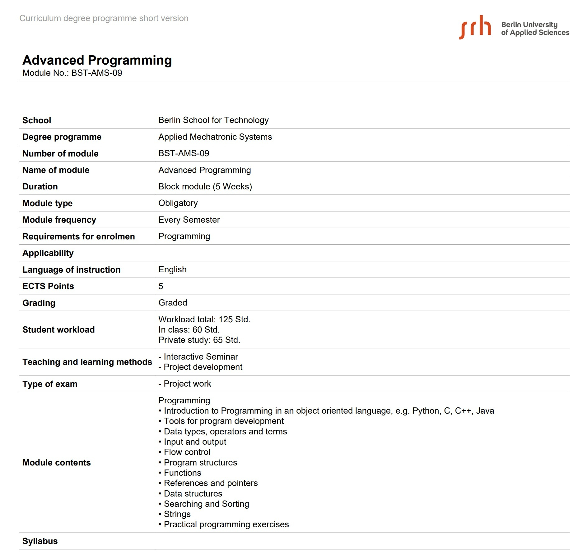
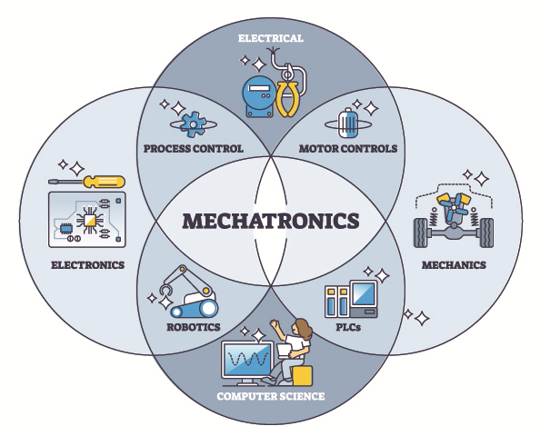
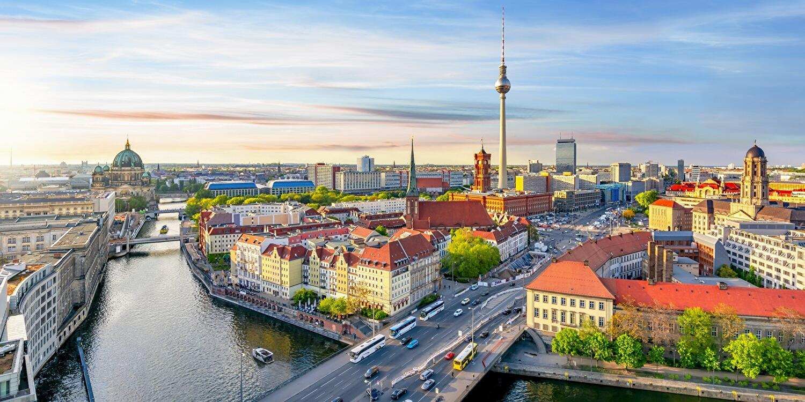

This section lists the topics to be reviewed such as Introduction to Programming in an object oriented language, Tools for program development, etc

Mechatronics represents the convergence of mechanical engineering, electrical engineering, and software development, creating a unique field with diverse career opportunities and practical applications.
Key Benefits: Mechatronics graduates are highly sought after across industries including robotics, automotive, manufacturing, healthcare technology, and renewable energy. The interdisciplinary nature of the field provides flexibility to specialize in any of the three core domains or remain a versatile engineer.

Berlin, the capital of Germany, is one of Europe's most vibrant and innovative cities. With a population of over 3.6 million people, Berlin serves as the political, cultural, and economic center of Germany. The city is renowned for its dynamic atmosphere, rich history, and forward-thinking approach to technology and entrepreneurship.
Berlin has emerged as a leading European center for artificial intelligence and technology innovation. The city hosts numerous AI research institutions, startups, and innovation labs working on cutting-edge projects in machine learning, computer vision, and autonomous systems. Major tech companies and research organizations have established operations in Berlin to tap into its talented workforce and innovative ecosystem.
Sources: Berlin Official Portal | TechCrunch | European Commission - Digital Single Market
Sources: StartupDetector Germany | Crunchbase | Berlin Partner für Wirtschaft und Technologie | Forbes
Berlin hosts several prestigious universities and technical institutions offering world-class education. Students benefit from proximity to leading research centers, industry partners, and networking opportunities with entrepreneurs and innovators. The city's dynamic job market offers abundant internship and career opportunities across technology, finance, media, and other sectors.
